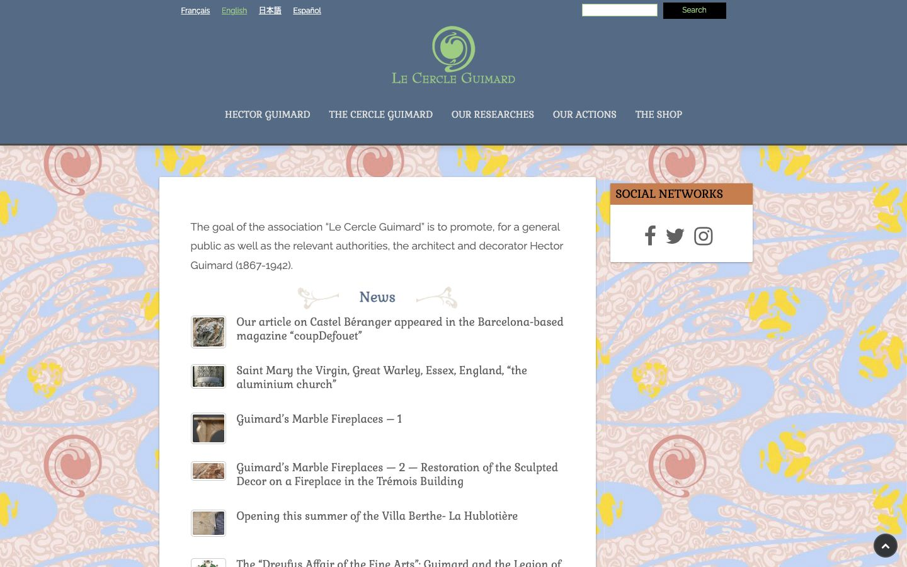

References / Website / 231
Le Cercle Guimard website
The Guimard society’s site sets its news column on a full-page repeat of a Guimard-style textile: pink swirls, blue whiplash scrolls, and yellow blossoms.
- Source
- lecercleguimard.fr
- Creator
- Le Cercle Guimard
- Style
- Art Nouveau (agent-proposed, not yet reviewed by a person)
- Evidence
- Captured with
tools/capture.mjs(headless Chrome, 1440 × 900) on 28 September 2026 and inspected. Nothing covers the page. The request for lecercleguimard.fr redirected to the English home page. - Reviewed
- Rights
- Third-party work, stored with credit for commentary. License: unverified. Rights policy
Observed
- A slate-blue header holds a pale green logo: a spiral seed or bud shape above “Le Cercle Guimard” in small capitals.
- The navigation is set in a light serif in capitals, in white on the slate blue.
- Below the header, the whole page background is a repeat pattern: dense pale pink swirls, large sky-blue whiplash scrolls, coral spiral bosses, and yellow flower clusters.
- A white main panel holds the news list. News headlines are set in a rounded, calligraphic serif (Gabriela per the measurement) in slate blue.
- The “News” heading is flanked by two small drawn plant sprigs that curl outward.
- A small side panel has an orange-brown title bar reading “Social networks”. News thumbnails have thin gray frames.
Why it belongs
The site uses the style the way a Guimard interior would: pattern on the ground, a calm reserved panel for content. The measurement cannot see the pattern because it is a background image (patternShare 0, imageShare 0.57).
Measured: square panels (radius median 0), thin 1 px borders on 54% of boxes, faint shadows on 11%, and one measured colour family plus the pattern colours in pixels. The fingerprint’s radius and pattern metrics fail for reasons the rubric does not require.
Borrow
Put the ornament on the page ground as one repeated textile, and keep content in a plain, light, outlined panel on top.
Flank a section heading with two small drawn sprigs instead of a rule.
Measured
Machine-extracted by tools/extract-traits.js on . Full measurement.
- Type families
- Raleway (76%), Gabriela (24%)
- Type scale ratio
- 1.1
- Median radius
- 0 px
- Mean chroma
- 0.04
- Palette
- #ffffff 51%
- #616161 28%
- #546a85 18%
- #dddddd 1%
- #c67e4e 1%
- #000000 1%
- #2d3032 0%
- #9ecc83 0%

